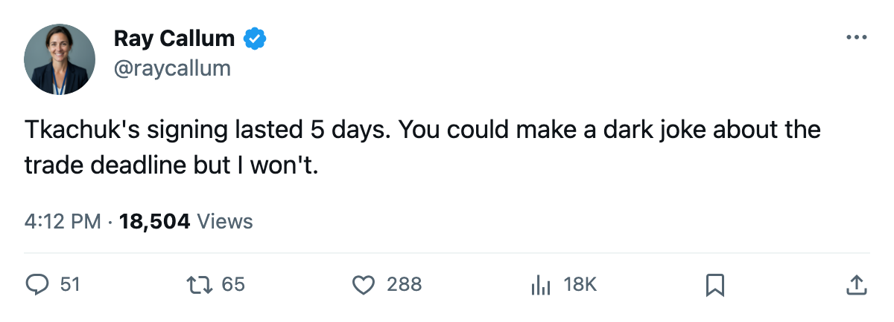
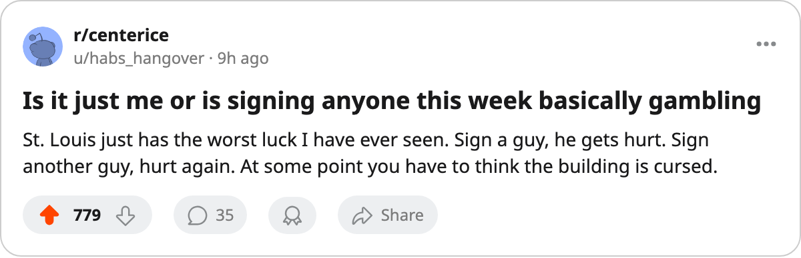

Injury Report: St. Louis lose Tkachuk (hip); return targeted for April 23
The Blues' highest-graded player was signed 5 days before going down. They trail the 8th seat by 6 points with 16 games left.
 Ray CallumSenior correspondent · Home Ice Network
Ray CallumSenior correspondent · Home Ice Network St. Louis Blues has placed
St. Louis Blues has placed  Keith Tkachuk90 on the injured list with a hip. The league's onset window runs between March 7 and March 9. His return date is April 23.
Keith Tkachuk90 on the injured list with a hip. The league's onset window runs between March 7 and March 9. His return date is April 23.
St. Louis signed him on March 4 for $263,400. He carries an 86 overall grade from the Bureau's Book, the highest mark on the club's roster. Between 3 and 5 days separate the signing from the injury.
The Blues sit at 21 wins, 31 losses, 5 overtime losses and 65 points, 10th in the West.  Phoenix Coyotes holds 8th with 71. The gap is 6 points, and both clubs have 16 games remaining. Losing Tkachuk strips the most dangerous player from a lineup that was already fighting uphill for the last playoff seat.
Phoenix Coyotes holds 8th with 71. The gap is 6 points, and both clubs have 16 games remaining. Losing Tkachuk strips the most dangerous player from a lineup that was already fighting uphill for the last playoff seat.
Six of 9 recent signings are hurt
Tkachuk is the latest in a run that has swallowed most of what clubs have bought this week. Of the 9 players signed on March 4 and March 5, 6 are now on the injured list:
| Player | Club | Part | Return |
|---|---|---|---|
| Keith Tkachuk | STL | Hip | Apr 23 |
 David Vyborny80 David Vyborny80 | CBJ | Groin | Mar 11 |
 Dan Boyle80 Dan Boyle80 | TB | Elbow | Mar 15 |
 Brian Leetch86 Brian Leetch86 | NYR | Shoulder | Apr 10 |
 Ales Hemsky75 Ales Hemsky75 | EDM | Neck | Mar 13 |
 Jan Hlavac76 Jan Hlavac76 | TB | Elbow | Mar 14 |
Jim Montgomery of  Columbus Blue Jackets, Dale Purinton of
Columbus Blue Jackets, Dale Purinton of  New York Rangers and John Erskine70 of
New York Rangers and John Erskine70 of  Dallas Stars are the three who came off the board in the same 2 days and are not on the list.
Dallas Stars are the three who came off the board in the same 2 days and are not on the list.
Tonight
St. Louis visits Dallas Stars, which has a 25-9 home record, the best in the West. The two have met 3 times this season and split the series at 1 win, 1 loss and 1 overtime loss each. Dallas has outscored St. Louis 9 to 7 across those 3 games.
The trade window closes March 19.

